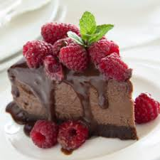

Servings: 12
Prep time: 20 minutes

Ingredients
- 24 choclate sandwich cookies (Oreos)
- 28 grams confectioners' sugar
- 4 tablespoons of unsalted butter, melted
- 1/2 cup of milk
- 2 cups semisweet chocolate chips or bittersweet chocolate chips
- 1 teaspoon espresso powder
- 680g cream cheese, room temperature
- 1 cup granulated
- 4 large eggs, at room temperature
- 1 teaspoon pure vanilla extract
- 2 tablespoons of unbleached all purpose flour
Instructions
- Preheat the oven to 375°F. Lightly grease a 9" springform pan.
- To make the crust: Crush, grind, or otherwise pulverize the cookies together with the sugar; a food processor works well here. If desired, set aside about a tablespoon of the crumbs to garnish the finished cake.
- Add the melted butter, processing briefly or stirring until the mixture is evenly crumbly. Press the moist crumbs into the bottom and partway up the sides of the prepared pan. Place the pan on a baking sheet, to catch any potential drips of butter
- Bake the crust for 15 minutes. Remove it from the oven, and set it aside as you make the filling.
- Reduce the oven heat to 350°F
- To make the filling: Combine the milk and chocolate chips in a small saucepan or microwave-safe bowl or large cup. Heat, stirring frequently, until the chips melt and the mixture is smooth. Remove from the heat, stir in the espresso powder, and set the mixture aside.
- In a large mixing bowl, beat together the cream cheese and sugar at low speed, until thoroughly combined. Scrape the bottom and sides of the bowl, and beat briefly, just until smooth.
- Add the eggs one at a time, beating to combine after each one.
- Stir in the vanilla, then the flour.
- Add the chocolate/milk mixture, beating slowly until thoroughly combined. Scrape the bottom and sides of the bowl; beat briefly, just until smooth.
- Pour the batter atop the crust in the pan. Place the pan on a baking sheet; this will make it easier to get the cake in and out of the oven safely.
- Bake the cake (remember, the oven temperature should be 350°F) for 45 to 50 minutes, until a toothpick inserted into the cake 1" from the outside edge comes out clean. A digital thermometer, inserted at the same point, should read 175°F. The center may not look set; that's OK.
- Turn off the oven, crack the door open several inches, and allow the cake to cool in the oven for 1 hour. Remove the cake from the oven, and set it on a rack to finish cooling. When it's completely cool, cover the cake, and refrigerate it until ready to serve.
- Garnish the cake with the reserved crumbs. Serve it in small slices, with whipped cream and berries.